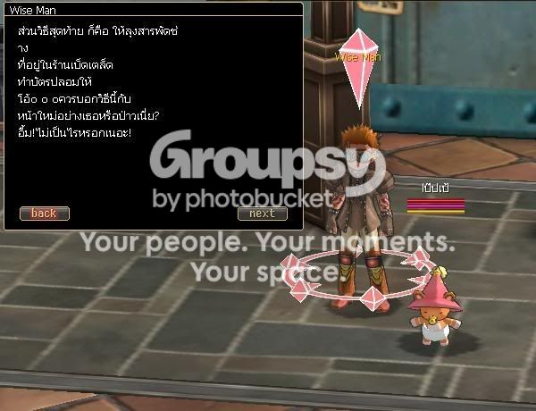
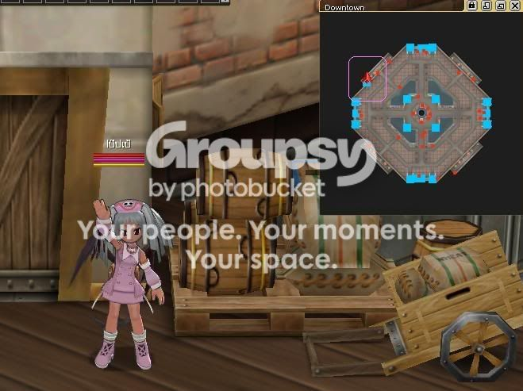
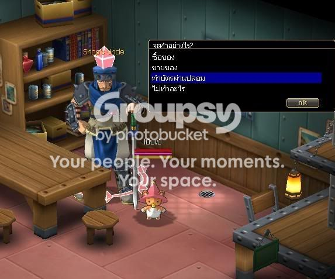

YpZ เขียน:อยากรุ้ว่านำยายืดผมนี่
ใช้แล้วจะเป็นยังไงหรอคับ
ถ้าผมสั้นจะเป็นผมยาวรึปล่าว
แล้วผสมเองได้ไหม ทำยังไงอ่ะคับ
ขอบคุงคับ
ถามอีกรอบครับ ยังไม่มีใครตอบเลย ><
อ่อ อีกเรื่องนะครับ
wooden borderมีไว้ทำไรหรอครับ
ผม search แล้วไม่เจออะคับ
 โดย ECO » พฤหัสฯ. 09 ส.ค. 2007 8:56 pm
โดย ECO » พฤหัสฯ. 09 ส.ค. 2007 8:56 pm
YpZ เขียน:อยากรุ้ว่านำยายืดผมนี่
ใช้แล้วจะเป็นยังไงหรอคับ
ถ้าผมสั้นจะเป็นผมยาวรึปล่าว
แล้วผสมเองได้ไหม ทำยังไงอ่ะคับ
ขอบคุงคับ
 โดย ECO » ศุกร์ 10 ส.ค. 2007 5:26 am
โดย ECO » ศุกร์ 10 ส.ค. 2007 5:26 am
YpZ เขียน:YpZ เขียน:อยากรุ้ว่านำยายืดผมนี่
ใช้แล้วจะเป็นยังไงหรอคับ
ถ้าผมสั้นจะเป็นผมยาวรึปล่าว
แล้วผสมเองได้ไหม ทำยังไงอ่ะคับ
ขอบคุงคับ
ถามอีกรอบครับ ยังไม่มีใครตอบเลย ><
อ่อ อีกเรื่องนะครับ
wooden borderมีไว้ทำไรหรอครับ
ผม search แล้วไม่เจออะคับ
 โดย ECO » ศุกร์ 10 ส.ค. 2007 7:52 am
โดย ECO » ศุกร์ 10 ส.ค. 2007 7:52 am
kiskiar เขียน:อยากทราบว่า sal steel 10 อันเอาไปแลกแล้วจะได้อะไรเหรอคะ
แล้ว demon steel มันดรอปยากแค่ไหน
พอดีตีหินมาทั้งวันแล้วได้แต่sal steelอ่ะค่ะ เดมอนไม่เห็นตกซักกะก้อนT^T
 โดย ECO » ศุกร์ 10 ส.ค. 2007 8:19 am
โดย ECO » ศุกร์ 10 ส.ค. 2007 8:19 am
Nimble เขียน:ขอถามอีกครั้งเล็กน้อย
Yamabuki สามารถทำได้ตอน lv เท่าไหร่เหรอ? 30 หรือ 31?
 โดย ECO » ศุกร์ 10 ส.ค. 2007 9:37 am
โดย ECO » ศุกร์ 10 ส.ค. 2007 9:37 am
 โดย ECO » ศุกร์ 10 ส.ค. 2007 11:42 am
โดย ECO » ศุกร์ 10 ส.ค. 2007 11:42 am
pooklook เขียน:ตอนนี้เล่นตัวที่ 2 อยู่ค่ะ หาร้านเบ็ดเตล็ดไม่เจอง่า เข้าเมืองไม่ได้เลยอ่าค่ะ
ตอนเข้าเมืองของตัวแรกก็ใช้วิธีแรก ที่ไปคุยกับประธาน ยังไม่เคยเป็นกองกำลังทหารด้วยค่ะ
กะว่าจะลองทำอีกไอดี ทดสอบว่า ร้านอยู่ไหน เห็นตำแหน่งของร้านแล้วนะคะ แต่ไม่มีทางเข้าอ่า
รบกวนผู้รู้ทีนะค้า ว่าควรทำยังไงดี ขอบคุนค่า หรือมันเปงบัคงะ



่กำลังดูบอร์ดนี้: ไม่มีสมาชิก และ บุคคลทั่วไป 1 ท่าน